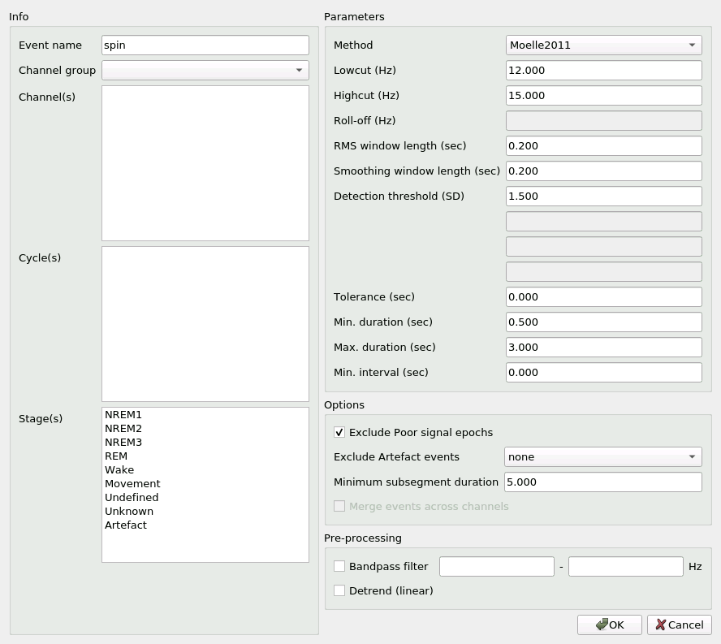
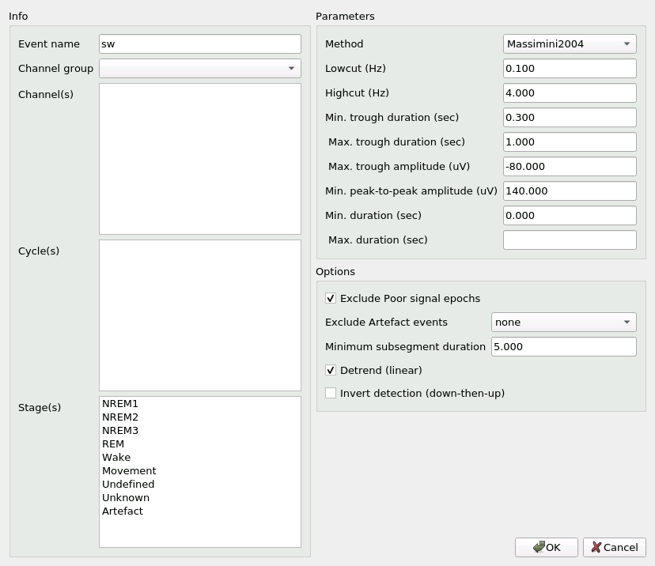

Event detection
Wonambi can automatically detect sleep spindles and slow waves in the signal.
To detect events, make sure you have first loaded a Montage and an Annotation File.
In your Montage, create the desired channels for event detection. Note that filters set in the Channels tab are not retained for event detection.
Now, click on Analysis -> Detect and choose the desired event. This will open the detection dialog.
Let’s start with the spindle detection dialog:
Info
Under Label, enter the name of this event type, which will appear on the trace.
You may choose an existing event type or create a new one.
If you choose an existing event type, existing events of this type will be preserved.
Next, you will see Channel group and Channel(s).
You may perform automatic detection on several channels at once, within a same group.
Select the desired group from the drop-down menu, and the desired channel(s).
Select several channels by holding down the Ctrl key.
If you have delimited cycles (see Annotations), the cycle indices will appear under Cycle(s).
You may select one or several cycles.
If no cycle is selected, detection will ignore cycles.
Under Stage(s), select in which stage or stages to find events.
If no stage is selected, detection will ignore stages.
Warning
If you select neither a cycle nor a stage, detection will be carried out over the entire record, even wake!
Parameters
You may select among a number of spindle detection algorithms in the Method drop-down menu.
The parameter values will be updated to the values reported in the source literature.
These values remain fully customizable.
Note that not all method parameters are applicable to each method.
In these cases, the method parameter is grayed out and marked N/A.
For details about the implemented algorithms, see below.
Options
If you have marked certain epochs as having Poor signal, you may check Exclude Poor signal epochs to remove them from the detection signal.
Similarly, if you have marked events with event type Artefact, you may check the Exclude Artefact events box to remove them from the detection signal.
Signal on all selected channels that is concurrent with an Artefact event on any channel will be excluded from detection.
Signal selection and rejection may result in a fragmented signal, especially when excluding Artefact events.
You may set a minimum duration for these fragments with Minimum subsegment duration.
Signal fragments shorter than this value will be excluded.
All remaining fragments are then concatenated (within a same channel) to create the detection signal.
If you selected several channels, you may choose to merge spindles detected in close proximity across channels with Merge events across channels.
When this option is selected, spindles on different channels that are separated by less than a specified delay will be merged onto the channel with the earliest onset spindle.
The delay is set with Minimum interval, under Parameters. If Minimum interval is set to zero, only overlapping spindles will be merged.
The slow wave detection dialog is similar to the spindle detection dialog:
As in the spindle dialog, you can choose a slow wave detection algorithm from the Method drop-down menu, and the parameters will update with default values from the source literature.
Note that the AASM/Massimini_2004 method is identical to the Massimini_2004 algorithm, but with different default values for the method parameters.
For details about the implemented algorithms, consult the Help box, accessible at the bottom of the dialog.
The De-mean checkbox subtracts the mean of the detection signal for each channel.
The Invert detection checkbox allows you to “flip” the detection algorithm upside-down, so that instead of a “trough-then-peak” pattern, it will look for a “peak-then-trough” pattern.
For conceptual reasons, there is no option to merge events during slow wave detection.